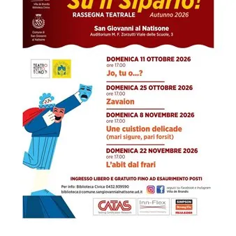

da dom 11 ott a dom 22 nov
Rassegna Teatrale 2026 "Su il Sipario!" Autunno
Torna a San Giovanni al Natisone la rassegna teatrale amatoriale, in collaborazione con l'Associazione Teatro Tutto Tondo. Quattro domeniche di risate, colpi di scena e teatro popolare friulano, con compagnie da tutta la regione. Presso l' Auditorium "M.F. Zorzutti" (Viale delle…
 Indicazioni
Indicazioni
- Costi e prenotazioni
- Costo non indicato · Prenotazione non indicata
- Programma
- Programma da verificare. Apri la fonte ufficiale per orari e possibili aggiornamenti.
- In caso di maltempo
- Nessuna indicazione specifica pubblicata.
- Note
- Acquisito automaticamente dalla fonte.
L’EVENTO
Descrizione completa
Torna a San Giovanni al Natisone la rassegna teatrale amatoriale, in collaborazione con l'Associazione Teatro Tutto Tondo. Quattro domeniche di risate, colpi di scena e teatro popolare friulano, con compagnie da tutta la regione. Domenica 11 ottobre 2026, ore 17.00 - Jo, tu o…? A volte il passato ritorna; massima che il dott. Marini, medico in carriera, non sembra conoscere. Così, allorquando una rivelazione inaspettata fa emergere ciò che accadde trent’anni orsono, per il dott. Marini la situazione si fa delicata: nulla per lui potrà tornare come prima. Il nostro si trova costretto a fare di tutto per riuscire ad insabbiare gli accadimenti trascorsi e, in particolare, a tenerli celati alla moglie. Riuscirà il nostro nell’ardua impresa? Ed ancora: in cosa è esattamente coinvolto? I colpi di scena non mancano ed il divertimento è assicurato. Domenica 25 ottobre 2026, ore 17.00 - Zavaion Lo spettacolo si rifà ad un evento realmente accaduto a Bertiolo nel 1875: un lauto pranzo organizzato in onore del compleanno del Re d’Italia, con degli invitati importanti e due signorine di città venute a rallegrare gli animi. La cucina della cuoca Rôse si anima per preparare la “mangiatorie”. Gjulie, sorella del padrone di casa, dovrà fare in modo che tutto funzioni al meglio. Con l’aiuto di Filumene, governante dello speziaro Tita, e, all’ultimo di Anzule, che non mancherà di portare scompiglio, il pranzo sarà un successo. E per concludere cosa c’è di meglio di un buon dolce! Il Zavaion! Ma Filumene avrà capito dove andare a prendere i savoiardi per accompagnare il zavaion? O succederà qualcosa di inaspettato che scuoterà letteralmente gli animi e non solo?… Clâr di Lune, sempre all’avanguardia nelle sue proposte teatrali, in questo spettacolo sperimenta l’uso di filmati video realizzati con gli attori della Compagnia in diversi luoghi del Friuli, che s’intervalleranno alle attrici in scena. Domenica 08 novembre 2026, ore 17.00 - Une cuiston delicade (mari sigure, pari forsit) Nella famiglia di Amedeo cresce l’agitazione per l’arrivo del fidanzato della figlia Colomba. ma da quando il giovane oltrepasserà la porta, nulla sarà più come prima. Una rivelazione improvvisa, presente in un atto notarile, porterà in casa una serie di fraintendimenti e situazioni paradossali che faranno penare il povero Amedeo per risolvere une questione molto delicata. Domenica 22 novembre 2026, ore 17:00 - L'abit dal frari Una commedia senza equivoci forse ci farebbe vincere l’insonnia, ma non ci farebbe certo divertire. A questo saggio principio si è attenuta l’Autrice di L’Abit dal Frari. Una mezza dozzina di personaggi, per lo più giovani (è bene sottolinearlo), vive una situazione che ritiene precaria e che vorrebbe superare, chi con disinvolta leggerezza, chi rodendosi interiormente. Tutti peraltro cercano di non darlo a vedere. Ogni personaggio si comporta con l’interlocutore di turno convinto di conoscerne il pensiero ed i sentimenti, ma provocando inconsapevoli equivoci; un gioco di presunte convinzioni, situazioni imbarazzanti, certezze smentite e ripudio del ben pensare, che vi divertirà. Ingresso libero e gratuito, senza prenotazione fino ad esaurimento posti
IL PROGRAMMA
Programma e orari
Appuntamenti raccolti dalle fonti elencate. Dove manca un orario, non è ancora disponibile in questa scheda.
Programma pubblicato
- Dal 2026-10-11 al 2026-11-22
INFORMAZIONI UTILI
Prima di partire
- Controllare la fonte prima di partire.
ORGANIZZAZIONE